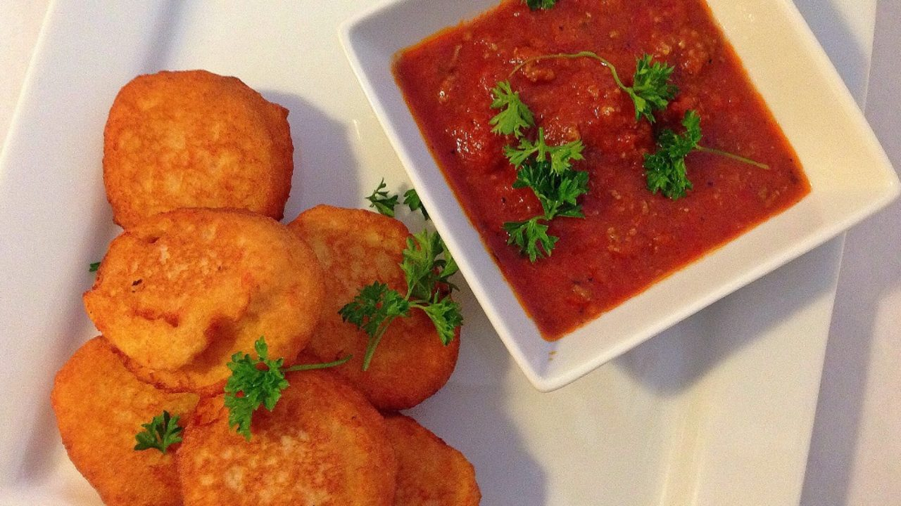

AKARA

Àkàrà (Fried Bean Cake)
Enjoy this delicacy which has a delightful taste and a crunchy bite with a very great nutritious content which is good for the body. Akara (Bean cake) is a popular street snack and staple food in Nigeria and some other African countries. Though its origin is said to be from the Yoruba tribe of Nigeria, it has found its way to the tables of other West African countries and even beyond. It is indeed one of the most popular breakfast eaten and spices.
This meal is majorly made from peeled bean formed into mini balls and then deep-fried.
This snack is served with either custard or pap.
It is also sold by women in market places as a source of livelihood.
Ingredients
- 3 cup of beans
- Chilli peppers
- Salt to taste
- Onions
- Vegetable oil for frying
Recipe instructions
- Grind the beans with your blender
- set some vegetable oil on the cooker to heat up
- put some of the ground beans into a mortar
- stir the beans with the pestle
- keep stirring till the ground beans appear whiter
- once the oil is hot, add onions and pepper to the beans puree
- add salt to taste
- fry the Akara by scooping the mixture with a table spoon and slowly pour into the oil
- fry the underside till brown and flip to fry the top side also.
- when the Akara balls are brown all over, remove and place in a sieve
- serve and best enjoyed with pap, custard and cooked pap (Eko).